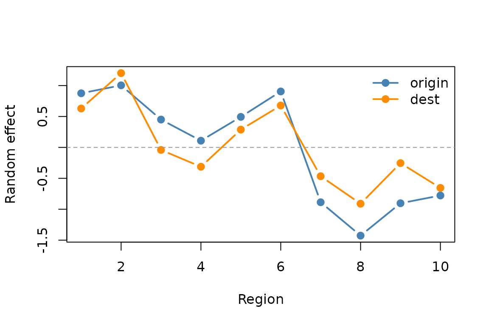
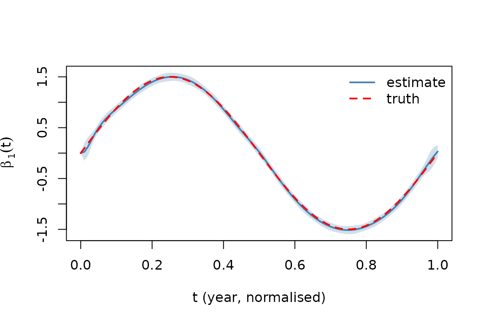

The OD setting
In an origin-destination (OD) model, each observation is a flow between two regions. Migration counts between US states, commuting flows between zip codes, or trade flows between countries all fit this pattern.
The random-effects design has two indicators per observation: one for the origin region and one for the destination region. With regions, the random-effects matrix is , and every row sums to 2.
The natural covariance structure on the resulting -vector of random effects is the Kronecker form where captures the origin/destination variance plus their covariance, and () captures spatial dependence between regions (often known a priori from geography).
This reduces free covariance parameters to just 3 for — a substantial saving when is moderate.
Load the bundled example
The package ships a simulated OD migration dataset of observations: regions over 30 years, with all origin–destination pairs observed annually.
path <- system.file("extdata", "od_migration.csv", package = "cevcmm")
od <- read.csv(path)
str(od)
#> 'data.frame': 3000 obs. of 6 variables:
#> $ origin : int 1 1 1 1 1 1 1 1 1 1 ...
#> $ dest : int 1 2 3 4 5 6 7 8 9 10 ...
#> $ year : int 1 1 1 1 1 1 1 1 1 1 ...
#> $ t : num 0 0 0 0 0 0 0 0 0 0 ...
#> $ wage_diff: num 0.208 1.409 -1.489 -1.476 0.991 ...
#> $ log_flow : num 3.75 4.52 3.97 3.01 3.35 ...
head(od)
#> origin dest year t wage_diff log_flow
#> 1 1 1 1 0 0.2082 3.7485
#> 2 1 2 1 0 1.4087 4.5180
#> 3 1 3 1 0 -1.4891 3.9731
#> 4 1 4 1 0 -1.4758 3.0113
#> 5 1 5 1 0 0.9908 3.3466
#> 6 1 6 1 0 -0.8832 5.2626The columns:
-
origin,dest: integer region IDs in -
year: 1 through 30 -
t: year normalised to -
wage_diff: a continuous covariate whose effect on flows is allowed to vary smoothly witht -
log_flow: the response (log migration count)
Build the random-effects design
G <- 10L
N <- nrow(od)
Z <- matrix(0, N, 2L * G)
Z[cbind(seq_len(N), od$origin)] <- 1 # origin indicators in cols 1..G
Z[cbind(seq_len(N), G + od$dest)] <- 1 # destination indicators in cols (G+1)..2G
# Verify the OD structure: every row sums to 2 (one origin + one dest)
table(rowSums(Z))
#>
#> 2
#> 3000Choose an initial spatial covariance
In a real analysis would come from geographic distance. Here we use an exponential decay in region-index distance as a reasonable proxy:
Fit
A single vcmm() call with
re_cov = "kronecker". The package detects the constant
row-sum automatically and applies the identifiability shift described in
vignette("distributed-fitting").
fit <- vcmm(y = od$log_flow,
X = od$wage_diff,
Z = Z,
t = od$t,
method = "csl",
re_cov = "kronecker",
n_groups = G,
Sigma_spatial_init = Sigma_spatial,
control = vcmm_control(
sigma_eps = 0.6,
sigma_alpha = sqrt(0.5),
update_variance = TRUE))
fit
#> <vcmm_fit> Varying Coefficient Mixed-Effects Model fit
#> method : CSL
#> n_obs : 3000
#> p (fixed) : 19
#> q (random) : 20
#> RE cov : kronecker
#> pilot iter : 4 (converged)
#> newton step : 1
#> sigma_eps : 0.5991
#> Sigma_2x2 :
#> [0.9444 0.7649]
#> [0.7649 0.8597]
#> OD corr : 0.8489
#> Sigma_spatial: 10 x 10 (G = 10 groups)
#> elapsed : 0.0050 sec (pilot 0.0030s + newton 0.0010s)Interpret the estimated
Sigma_2x2_hat <- fit$re_cov_state$Sigma_left
round(Sigma_2x2_hat, 3)
#> [,1] [,2]
#> [1,] 0.944 0.765
#> [2,] 0.765 0.860
# Correlation between origin and destination effects
corr_OD <- Sigma_2x2_hat[1, 2] /
sqrt(Sigma_2x2_hat[1, 1] * Sigma_2x2_hat[2, 2])
round(corr_OD, 3)
#> [1] 0.849The diagonal entries give the origin and destination variance components; the off-diagonal entry summarises whether a region that tends to send many migrants also tends to receive many. A positive correlation says yes — high-traffic regions are high-traffic in both directions.
The true simulation values were (correlation 0.46).
On small , the estimated will differ from truth. The 3 free parameters of are estimated from effectively a single realisation of , plus an EM correction for the posterior uncertainty in given the data. For , sampling variability in the empirical has standard error , and the EM correction inflates the diagonals further to account for posterior uncertainty. The qualitative pattern — positive variance components, positive OD correlation, “high-traffic” regions that send and receive heavily — is the right takeaway at this ; the exact numerical values rely on a larger network or repeated realisations.
Recover the per-region random effects
The internal column-stacking convention is where is — the first column holds origin effects, the second holds destination effects.
alpha_hat <- fit$alpha
M_hat <- matrix(alpha_hat, nrow = G, ncol = 2L)
colnames(M_hat) <- c("origin", "dest")
rownames(M_hat) <- paste0("region_", seq_len(G))
round(M_hat, 3)
#> origin dest
#> region_1 0.876 0.629
#> region_2 1.004 1.201
#> region_3 0.450 -0.041
#> region_4 0.109 -0.313
#> region_5 0.494 0.288
#> region_6 0.905 0.677
#> region_7 -0.887 -0.466
#> region_8 -1.426 -0.911
#> region_9 -0.903 -0.254
#> region_10 -0.778 -0.655A quick visual of the two effect series. Notice how
origin and dest track each other closely
across regions — that’s the visual signature of the high empirical OD
correlation discussed above.
matplot(seq_len(G), M_hat, type = "b", pch = 19, lty = 1, lwd = 2,
col = c("steelblue", "darkorange"),
xlab = "Region", ylab = "Random effect")
abline(h = 0, lty = 2, col = "grey60")
legend("topright", c("origin", "dest"),
col = c("steelblue", "darkorange"), pch = 19, lwd = 2, bty = "n")
Estimated origin and destination effects per region.
Estimated varying coefficient
t_grid <- seq(0, 1, length.out = 100L)
vc <- varying_coef(fit, t_new = t_grid, k = 1L, se.fit = TRUE)
plot(t_grid, vc$fit, type = "l", lwd = 2, col = "steelblue",
xlab = "t (year, normalised)",
ylab = expression(hat(beta)[1](t)),
ylim = range(vc$fit - 2 * vc$se.fit, vc$fit + 2 * vc$se.fit,
1.5 * sin(2 * pi * t_grid)))
polygon(c(t_grid, rev(t_grid)),
c(vc$fit + 2 * vc$se.fit, rev(vc$fit - 2 * vc$se.fit)),
col = adjustcolor("steelblue", alpha.f = 0.25), border = NA)
lines(t_grid, 1.5 * sin(2 * pi * t_grid),
col = "red", lty = 2, lwd = 2)
legend("topright", c("estimate", "truth"),
col = c("steelblue", "red"), lty = c(1, 2), lwd = 2, bty = "n")
Estimated time-varying effect of wage_diff on log flow.
The wage-difference effect oscillates with time: in the simulation it follows . Unlike , the varying-coefficient curve is supported by all observations and tracks the truth essentially perfectly across the 30-year window.
Distributing this fit
The same OD problem can be fit in the distributed setting. Each node
computes a node_summary() on its slice and ships the
result; the central node aggregates and calls
fit_from_summaries() with
rowsum_constant = 2 so the identifiability
shift matches what vcmm() applies automatically:
# Split N obs across 3 nodes
node_id <- sample.int(3L, N, replace = TRUE)
splits <- split(seq_len(N), node_id)
design <- build_vcmm_design(X = od$wage_diff, t = od$t)
X_d <- design$X_design
summaries <- lapply(splits, function(idx)
node_summary(od$log_flow[idx],
X_d[idx, , drop = FALSE],
Z[idx, , drop = FALSE]))
fit_dist <- fit_from_summaries(
summaries,
penalty = design$penalty,
control = vcmm_control(sigma_eps = 0.6,
sigma_alpha = sqrt(0.5),
update_variance = TRUE),
method = "csl",
re_cov = "kronecker",
n_groups = G,
Sigma_spatial_init = Sigma_spatial,
rowsum_constant = 2
)
# Same answer as the pooled fit above, up to BLAS noise
max(abs(fit$beta - fit_dist$beta))
max(abs(fit$alpha - fit_dist$alpha))See vignette("distributed-fitting", package = "cevcmm")
for the full explanation of the distributed API.
Where to go next
-
Basic usage with diagonal random effects:
vignette("getting-started", package = "cevcmm"). -
Distributed fitting in detail:
vignette("distributed-fitting", package = "cevcmm").